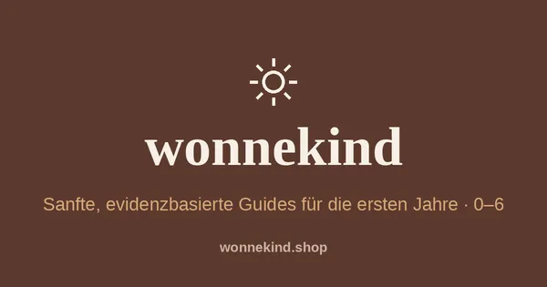
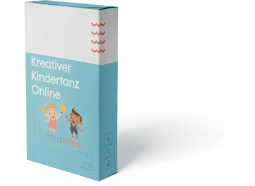

Sanfte Eltern-Guides für Kinder von 0–6 · 50 % Provision
Produktprofil · Marktplatz-Daten 2026-10-13 · Verkaufsseiten-Recherche 2026-10-13 · Kategorien: Family & Children, Education
- Sanfte Eltern-Guides für Kinder von 0–6 · 50 % Provision ist ein/e Download in Family & Children und Education, vertrieben über den Digistore24-Marktplatz von Anbieter teamwonnekind, gelistet seit 2026-07-29.
- Listenpreis $36.64; Digistore24 meldet — Checkout-Konversion, — Stornierungsquote und 50 % Affiliate-Provision.
- Verdienst pro Verkauf (Affiliate): $18.33 (Anbieter-seitige Statistik, keine Prognose).
Interesse an Sanfte Eltern-Guides für Kinder von 0–6 · 50 % Provision? Aktueller Preis, Boni und Garantiebedingungen finden Sie auf der offiziellen Seite des Anbieters:
Offizielle Verkaufsseite ansehen
Affiliate-Link (Werbung) — wir verdienen ggf. eine Provision, ohne Mehrkosten für Sie.

Marktplatz-Daten
| Produkttyp | Download |
|---|---|
| Preis | $36.64 (Single payment) |
| Affiliate-Provision | 50 % |
| Garantie/Rückgabe | Laut Verkaufsseite des Anbieters — vor dem Kauf auf der offiziellen Seite prüfen |
| Anbieter | teamwonnekind (gelistet seit 2026-07-29) |
| Marktplatz-Statistiken* | Checkout-Konversion — · Stornoquote — · Verdienst/Verkauf $18.33 |
* Anbieter-seitige Statistiken von Digistore24; sie hängen von der Traffic-Qualität ab und sind keine Prognose.
Marktplatz-Beschreibung des Anbieters
Wonnekind bietet kurze, verständliche PDF-Guides für typische Situationen in den ersten Familienjahren: Schlaf, Essen, Kita und Schule sowie Geschwister. Das Angebot passt zu deutschsprachigem Content rund um Familienalltag, Elternsein, Kleinkinder, bindungsorientierte Begleitung, Familienrezepte und Kita-Start. Affiliates erhalten 50 % Provision gemäß der im Produkt hinterlegten Digistore24-Einstellung, ein Bundle für 39 EUR und vier Einzelguides für jeweils 15 EUR, kostenlose Prüfexemplare nach bestätigter Partnerschaft, anpassbare Ideen für Reels, Storys, Pinterest und Newsletter sowie Promolinks und automatische Auszahlung über Digistore24. Es gibt keine Umsatzgarantie. Inhalte müssen ehrlich und transparent als Werbung beziehungsweise Affiliate-Inhalt gekennzeichnet werden. Keine Heil-, Erfolgs- oder Ergebnisversprechen.
Von der Verkaufsseite des Anbieters
Seitentitel: wonnekind — Sanfte Guides für die ersten Jahre
Meta-Beschreibung: Sanfte, evidenzbasierte PDF-Guides für Eltern von Kindern zwischen 0 und 6 Jahren – Schlaf, Essen, Kita & Schule, Geschwister.
Hauptüberschrift
Für die Abende, die gerade schwer sind.
Abschnitts-Überschriften
- Von der Frage zum ersten kleinen Schritt
- Wissen, das sich nicht klinisch anfühlt
- Für das Thema, das gerade dran ist
- Noch unsicher? Startet gratis.
- Ihr seid nicht allein damit
- Bevor ihr startet
- Bereit für mehr Leichtigkeit im Alltag?
Einstiegstext
Kurze PDF-Guides für ruhigere Nächte und leichtere Tage – sanft erklärt, sofort da, wenn ihr sie braucht.
Sucht euch das Thema, das euch gerade beschäftigt – Schlaf, Essen, Kita oder Geschwister.
Der Guide landet direkt nach dem Kauf als PDF in eurem Postfach. Kein Warten, kein Versand.
Konkrete, sanfte Schritte – passend zu eurer Familie, nicht zu einem starren Programm.
Recherche-Methode: rohes HTML · 532 Wörter · Qualität: rich · recherchiert am 2026-10-13. Vollständige Recherche-Datei (MD) ↗
Anwendung — laut Anbieter
Konkrete, sanfte Schritte – passend zu eurer Familie, nicht zu einem starren Programm.
Ersetzt das eine Fachberatung? Nein. Die Guides geben Orientierung und alltagstaugliche Schritte, ersetzen aber keine medizinische oder therapeutische Beratung.
Wie schnell wirkt das? Unterschiedlich – jedes Kind ist anders. Wir versprechen keine Wunder, sondern realistische, sanfte Schritte.
Gut zu wissen
- Keine Garantie-Formulierung in unserer Recherche gefunden — bestätigen Sie das Rückgabefenster auf der offiziellen Seite, bevor Sie kaufen.
- Marktplatz-Zahlen (Preis, Provision, Konversion, Stornoquote) — Quelle: offizielle Digistore24-Marktplatz-API (Affiliate-Sicht), Stand 2026-10-13. Gegenprüfung: Marktplatz-Suche nach Produkt-ID 712194.
- Verkaufsseiten-Zitate — Quelle: https://wonnekind.shop/, abgerufen 2026-10-13 (Methode: rohes HTML). Verify: offizielle Seite öffnen.
- Garantie / Rückgabe — vom Anbieter festgelegt; vor dem Kauf auf der Verkaufsseite bestätigen.
- Nicht von uns geprüft: Produktqualität, Ergebnisse, Testimonials — kein Praxistest für dieses Listing durchgeführt.
Häufige Fragen zu Sanfte Eltern-Guides für Kinder von 0–6 · 50 % Provision
Antworten aus dem Marktplatz-Snapshot (2026-10-13) und der Verkaufsseiten-Recherche (2026-10-13); Anbieteraussagen sind inline gekennzeichnet.
Was ist Sanfte Eltern-Guides für Kinder von 0–6 · 50 % Provision?
Sanfte Eltern-Guides für Kinder von 0–6 · 50 % Provision ist ein Angebot des Typs „Download" im Digistore24-Marktplatz, Anbieter: teamwonnekind, gelistet seit 2026-07-29. Eingepflegt unter Familie & Kinder und Bildung. Digistore24 wickelt Checkout, Lieferung und Rückgaben ab.
Wie viel kostet Sanfte Eltern-Guides für Kinder von 0–6 · 50 % Provision?
Der Digistore24-Marktplatz listet es für $36.64 (single payment). Preise legt der Anbieter fest und können sich ändern — der Marktplatz-Eintrag oben zeigt den Schnappschuss; die offizielle Verkaufsseite zeigt den aktuellen Preis.
Gibt es eine Geld-zurück-Garantie für Sanfte Eltern-Guides für Kinder von 0–6 · 50 % Provision?
Unsere Verkaufsseiten-Recherche hat keine explizite Garantie-Formulierung gefunden. Viele Digistore24-Produkte bieten 60 Tage Geld-zurück, aber das legt jeder Anbieter selbst fest — bestätigen Sie es auf der offiziellen Verkaufsseite, bevor Sie kaufen.
Ist Sanfte Eltern-Guides für Kinder von 0–6 · 50 % Provision seriös?
Wir bewerten keine Seriosität — wir veröffentlichen überprüfbare Zahlen: Anbieter teamwonnekind (gelistet seit 2026-07-29), Checkout-Konversion —, Stornoquote —, Affiliate-Verdienst/Verkauf $18.33 (alles Anbieter-seitige Marktplatz-Statistiken). Lesen Sie unsere 6-Punkte-Bewertungsmethode und entscheiden Sie anhand der Zahlen — oder diskutieren Sie Sanfte Eltern-Guides für Kinder von 0–6 · 50 % Provision auf GitHub.
Wo kann ich Sanfte Eltern-Guides für Kinder von 0–6 · 50 % Provision sicher kaufen?
Nur über die offizielle Verkaufsseite, die auf dieser Seite verlinkt ist (Checkout und Rückgaben laufen über Digistore24). Prüfen Sie dort Preis und Garantie vor der Bestellung. Der Link ist ein Affiliate-Link — der Kauf unterstützt diese Website ohne Mehrkosten für Sie.
Wie erhalte ich Sanfte Eltern-Guides für Kinder von 0–6 · 50 % Provision nach der Zahlung?
Der Checkout läuft über Digistore24: Nach der Zahlung erhalten Sie Ihren Zugang oder Download per E-Mail und in Ihrem Digistore24-Kundenkonto. Lieferdetails für diesen Produkttyp: Download-Produkte werden digital geliefert: sofort nach dem Checkout erhalten Sie Downloadlinks (oder Zugang zu einem Mitgliederbereich) — kein physischer Versand. Bei Problemen kann der Digistore24-Käufersupport Ihre Bestellung wiederherstellen.
Alle 50 Käuferfragen zu Familie & Kinder — das komplette Kategorie-FAQ.
Sanfte Eltern-Guides für Kinder von 0–6 · 50 % Provision auf Reddit diskutieren
In Community-Threads vergleichen echte Käufer Erfahrungen. Wir verlinken Communities, keine einzelnen Posts — Threads verschwinden, Subreddits bleiben:
- Reddit-Suche nach „Sanfte Eltern-Guides für Kinder von 0–6 · 50 % Provision" — Live-Ergebnisse, von uns nicht beeinflusst.
- Top-„Erfahrungs"-Treffer dieses Jahr — selbst nach Aktualität filtern.
Passendes auf Amazon.de
Physische Produkte und Zubehör, die häufig zusammen mit Sanfte Eltern-Guides für Kinder von 0–6 · 50 % Provision gekauft werden:
- Family & Children auf Amazon.de — Top-Ergebnisse, Amazon-Ranking.
- Bestseller: Family & Children — live Liste von Amazon, von uns nicht kuratiert.
Werbung: Als Amazon-Partner verdient DigistorePicks DE an qualifizierten Käufen (Partner-tag adminstorede-21). Amazon setzt eigene Preise und Provisionen (niedrige einstellige Prozente — weit unter den 30–75% der Digistore24-Anbieter). Amazon ist ein Convenience-Angebot für Sachprodukte, kein Ersatz für das digitale Produkt oben.
Ähnliche Angebote in Familie & Kinder

ZUGRIFF FÜR ALLE! Jede Person, die ein Arbeitsverhältnis mit Ihnen als Schulgemeinde hat sowie eine E-Mail-Adresse von Ihrer Schule, hat die Zufriffsberechtigun
Der Anti-Rosenkrieg-Kompass von AssetShield-X ist ein Programm, das Sie im Browser öffnen — auf Ihrem Rechner, Ihrem Tablet oder Ihrem Telefon. Wenn beide wolle

Jetzt ist AUSGEMOBBT! Schützen Sie Ihr Kind vor Mobbing - ganz nach dem Motto "Kinder schützen durch Stärken"!

Jetzt ist AUSGEMOBBT! Schützen Sie Ihr Kind vor Mobbing - ganz nach dem Motto "Kinder schützen durch Stärken"!
Sanfte Eltern-Guides für Kinder von 0–6 · 50 % Provision ist auch gelistet in
Bildung (597 Produkte)
Ähnliche Preislage in Familie & Kinder
Du bekommst 50 % Provision bei jedem Verkauf dieses Ratgebers. Menschen im Alter machen sich zunehmend Sorgen um ihr Gedächtnis – Namen, Termine, Alltagshilfen
Warum dieses Produkt für Affiliates interessant ist: Yoga und Schwangerschaft gehören zu den gefragtesten Themen im Gesundheits- und Familienbereich. Die Zielgr

"Tanzminis - Kreativer Kindertanz zuhause" ist ein Videokurs für Kinder ab 2,5 Jahren und ihre Eltern. Empfehlen Sie "Tanzminis" weiter und
Ähnliche Suchanfragen
Wo Sie es sich ansehen können
Wo Sie es sich ansehen können
Aktuelle Preise, Garantie und Boni finden Sie auf der offiziellen Verkaufsseite:
Offizielle Verkaufsseite ansehen
Das ist ein Affiliate-Link (Werbung) — kaufen Sie darüber, verdienen wir ggf. eine Provision, ohne Mehrkosten für Sie.
Quellen & weiterführende Informationen
- Offizielle Verkaufsseite (aktueller Preis, Garantie, Boni): wonnekind.shop/index.html#guides (Affiliate-Link)
- Öffentliche Digistore24-Produktseite: checkout-ds24.com/product/712194
- Vollständige Recherche-Datei (Markdown, versioniert): content/products/57796-sanfte-eltern-guides-f-r-kinder-von-0-6-50-provision.md
- Affiliate-Supportseite des Anbieters: wonnekind.shop/affiliate.html
- Marktplatz-Kategorie: Familie & Kinder
Wie wir Produkte wie Sanfte Eltern-Guides für Kinder von 0–6 · 50 % Provision bewerten
Sechs Prüfungen, ausschließlich mit offiziellen Marktplatz-Zahlen. Die vollständige Bewertungsmethode lesen · unsere Recherche-Standards & Kennzeichnung.
Fragen oder eigene Erfahrungen mit Sanfte Eltern-Guides für Kinder von 0–6 · 50 % Provision?
Praxis-Tests veröffentlichen wir erst, nachdem wir ein Produkt selbst gekauft haben — aber Ihre Erfahrung hilft anderen Lesern: Diskussion zu Sanfte Eltern-Guides für Kinder von 0–6 · 50 % Provision auf GitHub starten/verfolgen. Falsche Zahl gefunden? Korrektur melden — jede Seite zeigt ihre Datenstände, Korrekturen gelten für die ganze Website.